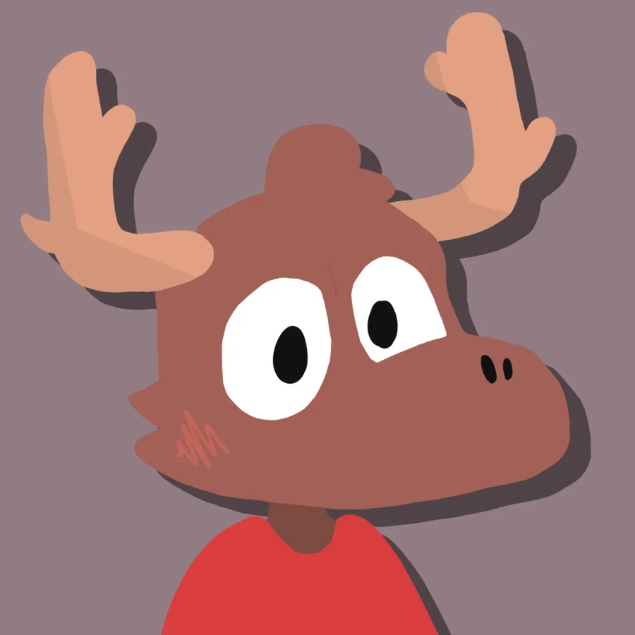
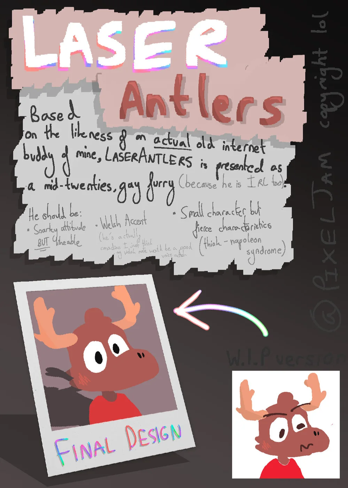
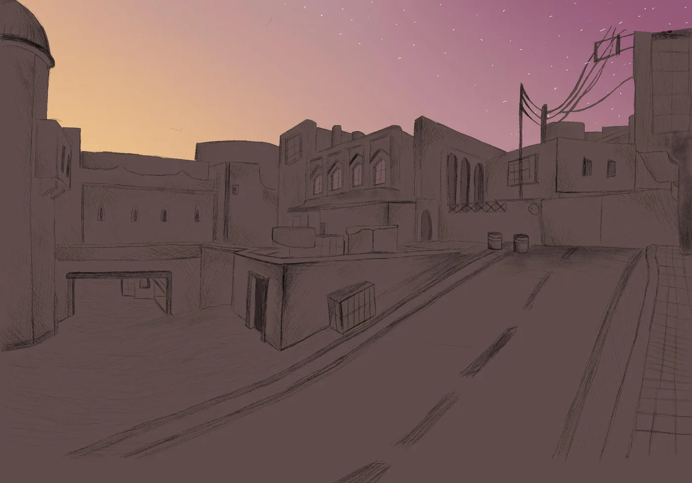
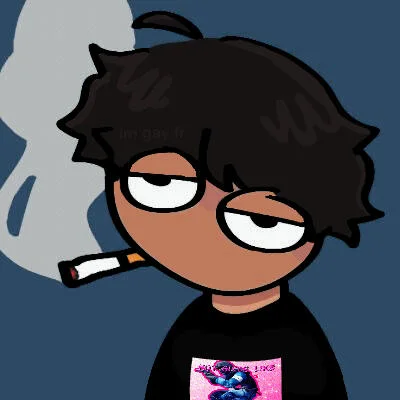
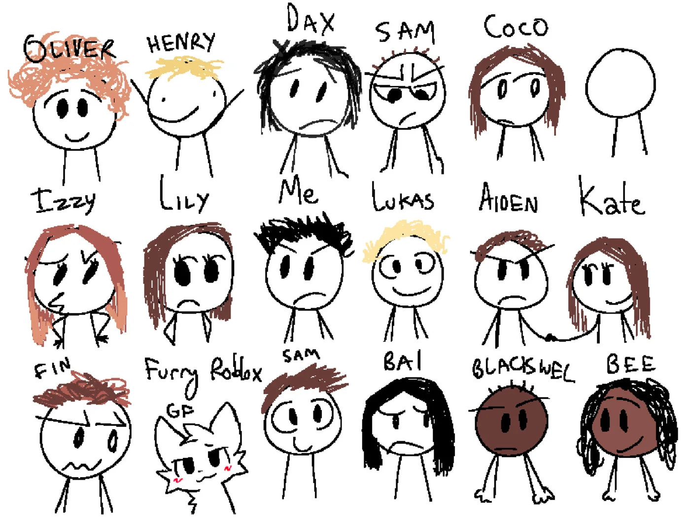
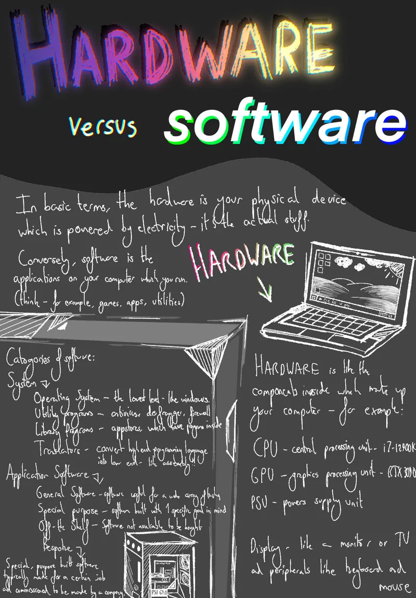
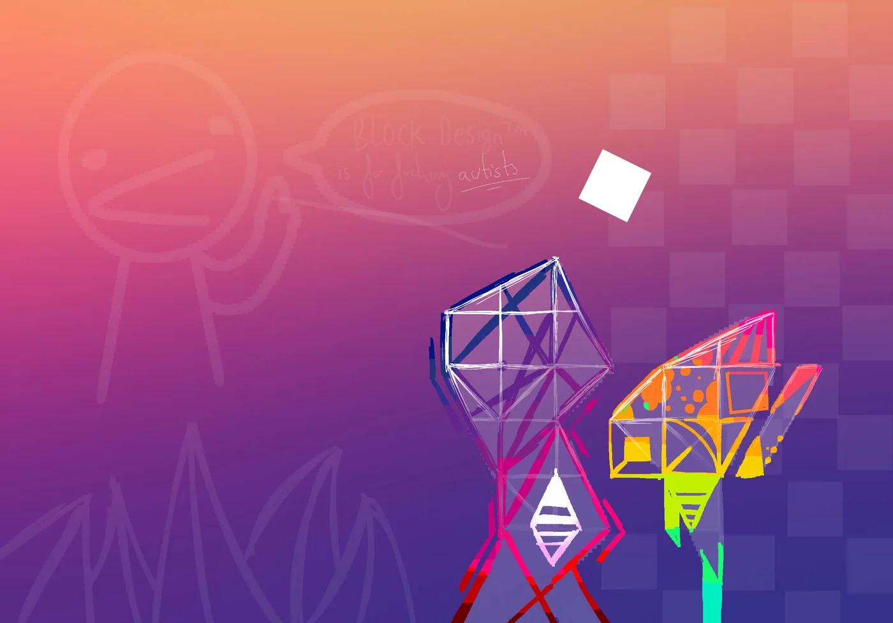
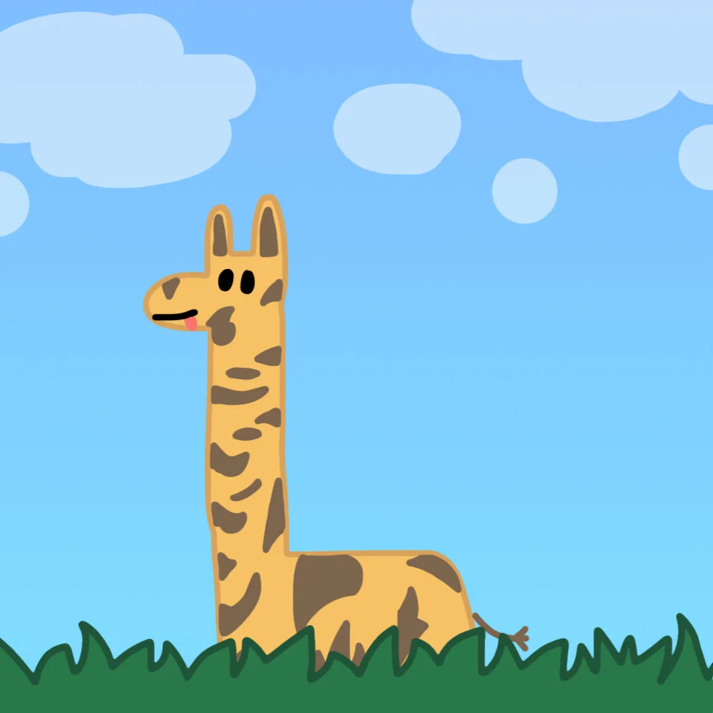
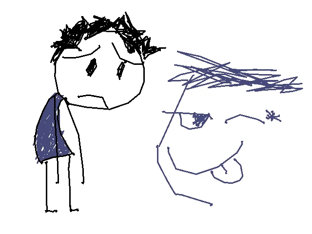
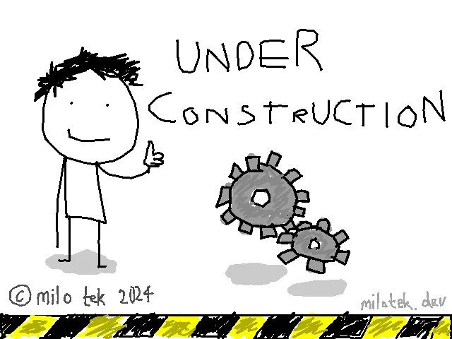

Mostly Procreate on an iPad Pro with a Pencil, going back to sixth form.
Some of it is concept art for games, some of it is for mates, some of it is padding and I've said so in the caption.

Laser Antlers, final render. A character based on an old internet mate. He looks like that on purpose.

The design sheet for the same character.Protagonist concept for my EPQ game.

de_dust2 in mat_fullbright.#BringBackLake. My favourite map. See lakeback.

A mate's Steam profile picture, drawn by request.

Me and my friends, drawn for someone's birthday.

Poster for a Computer Science competition in first term. Hardware versus software.

Geometry Dash 10 year anniversary fan art. I don't know what it represents either. Padding.Title screen for a pygame project.Sunset stage, same pygame project.Space stage.World stage.Underground stage.

Cute giraffe, made in Pixelmator Pro to demonstrate the app.

Under a minute, for a friend. Quality reflects that.

The old site's under construction gif. It sat in every screenshot slot for two years.